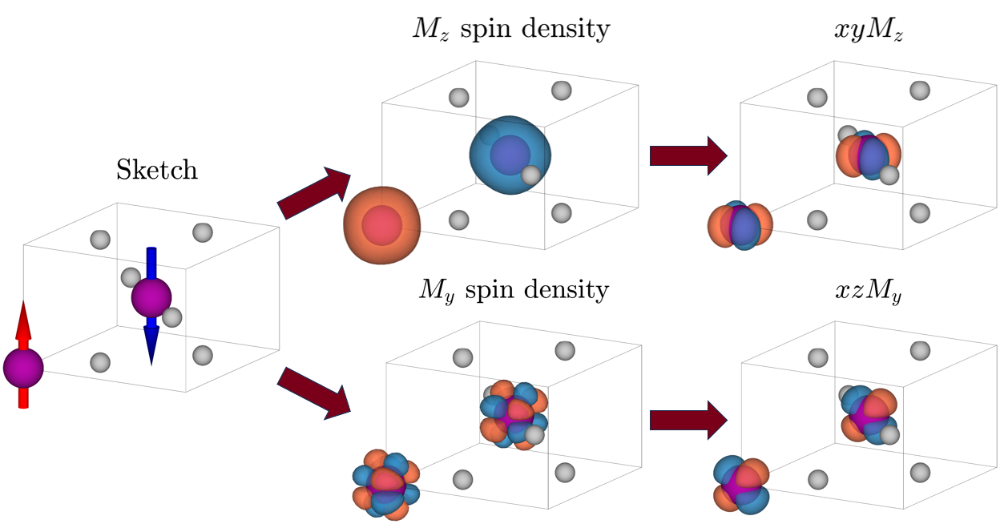
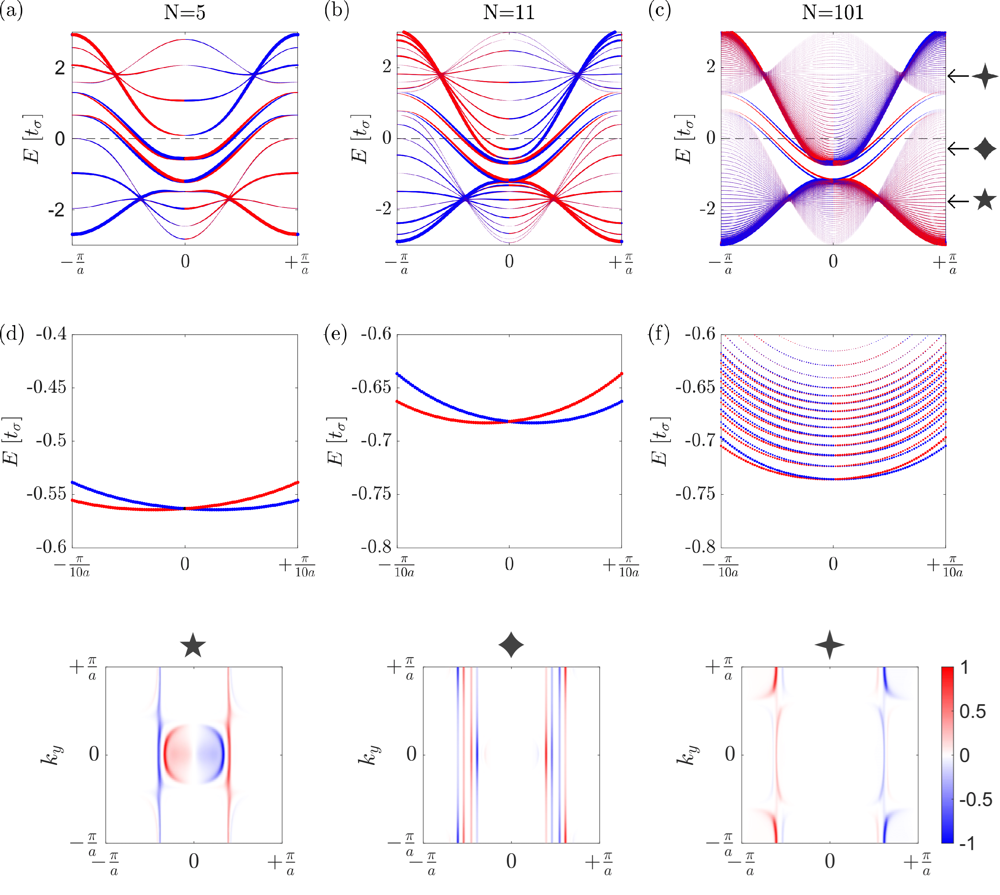
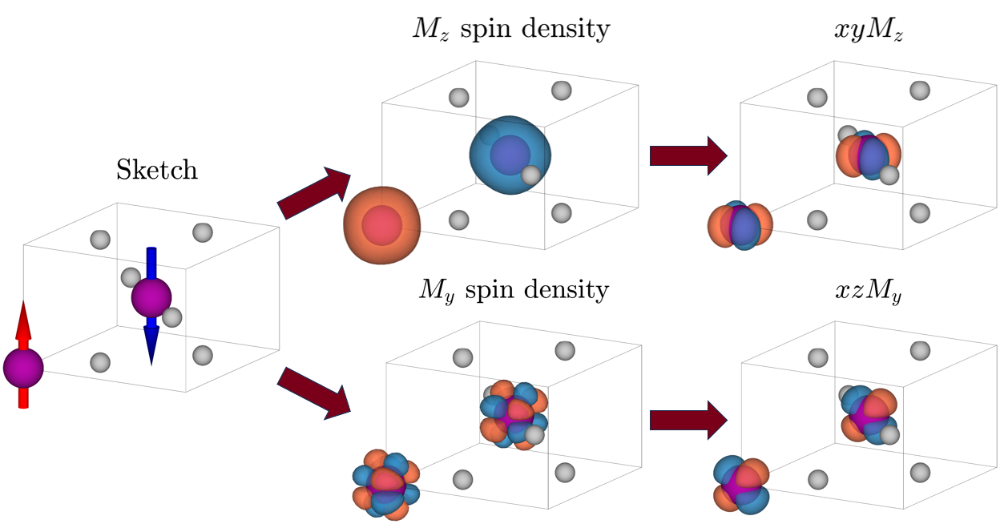
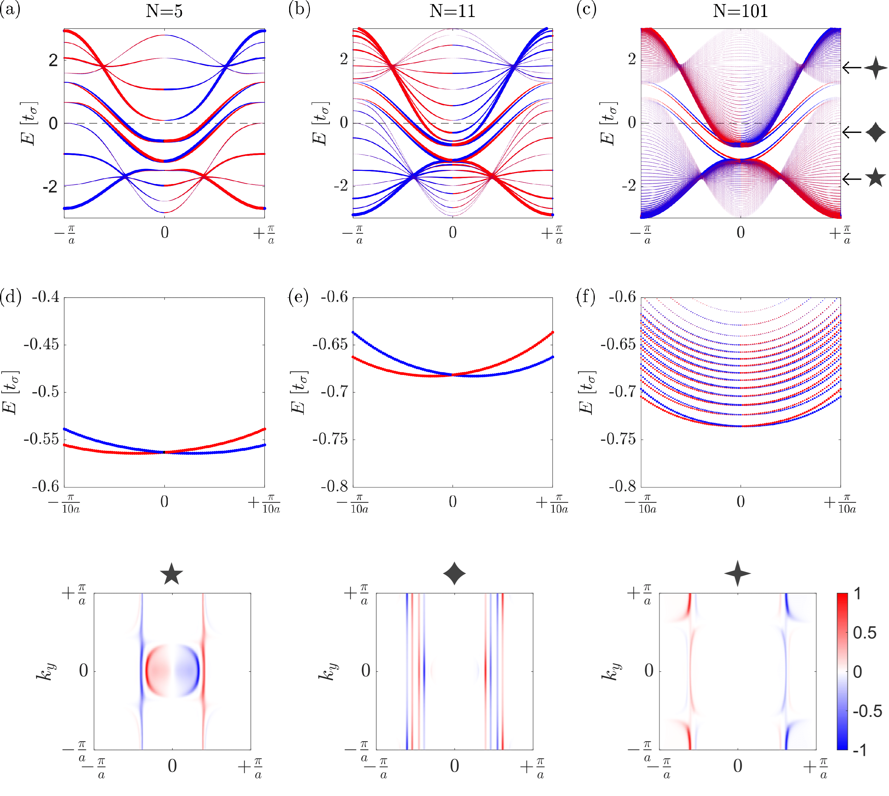
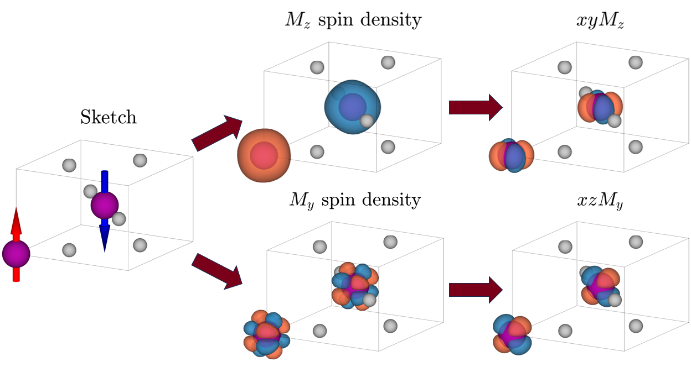
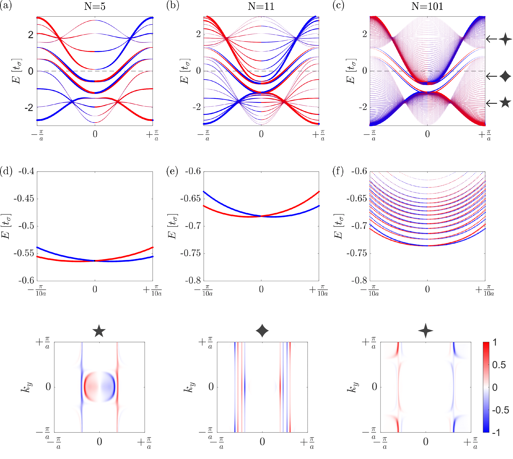

PhD candidate
Hello! I’m Luca. I am investigating novel magnetic phases of materials using group theory and DFT simulations in Turan Birol's group at the University of Minnesota.


Download my CV to learn more about my academic journey and projects.
I’ve compiled some notes in Condensed Matter Theory while I was in Copenhagen. For anyone interested, you can download them here:
Moreover, you can find here my Master's thesis on kagome-layered materials and here some slides on my Bachelor's thesis on the Monte Carlo method applied to the Ising model.